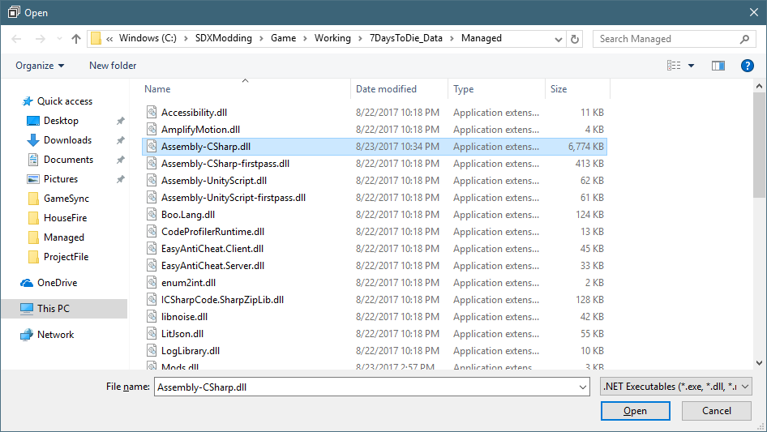
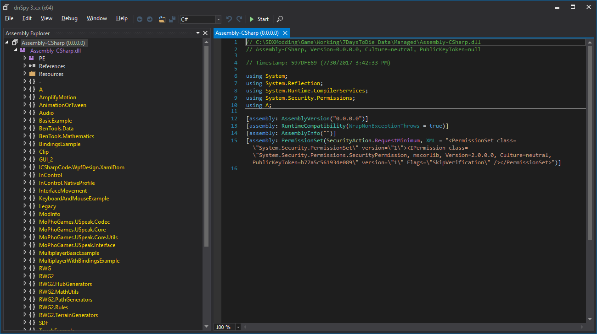
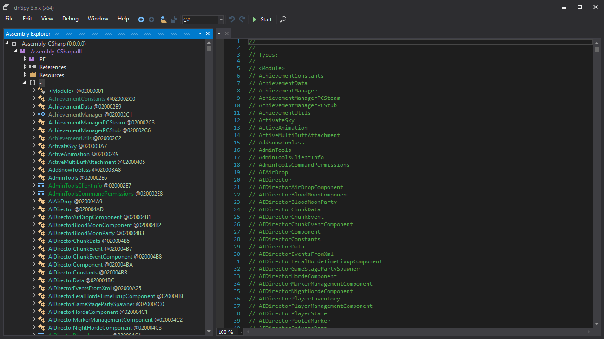

As with our previous examples, we are going to be working off our Working folder.
In dnSpy, click on the File menu, and select "Open...". Navigate to your C:\SDXModding\Game\Working\7DaysToDie_Data\Managed\Assembly-CSharp.dll

Click on Open.

Expand the Assembly-CSharp (0.0.0.0) by click on the Arrow, until your screen matches the above.
The Assembly Explorer window shows you a list of namespaces. These are usually isolated parts of code. Thankfully, we aren't too interested in these. What we are looking for, is the "{ } -" line.

Created with the Personal Edition of HelpNDoc: What is a Help Authoring tool?